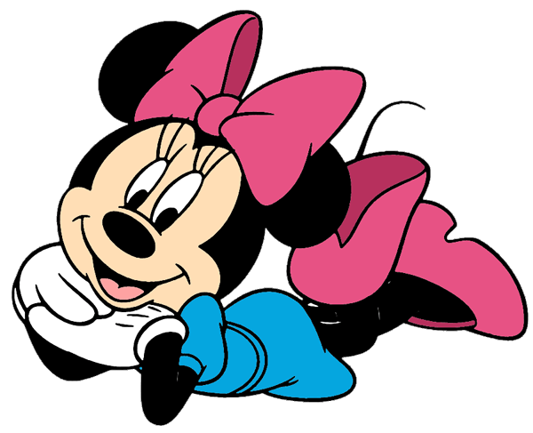

PERSONAL PROFILE
"Minnie Mouse"
Minerva "Minnie" Mouse is a funny animal cartoon character created by Ub Iwerks and Walt Disney. She and Mickey Mouse were first drawn by Iwerks in 1928. The comic strip story "The Gleam".
The comic strip story "Mr. Slicker and the Egg Robbers" introduced her father Marcus Mouse and her unnamed mother, both farmers. The same story featured photographs of Minnie's uncle Milton Mouse with his family and her grandparents Marshal Mouse and Matilda Mouse. Her best-known relatives, however, remain her uncle Mortimer Mouse and her twin nieces, Millie and Melody Mouse, though most often a single niece, Melody, appears. In many appearances, Minnie is presented as the girlfriend of Mickey Mouse, a close friend of Daisy Duck, and a friend to Clarabelle Cow.
Her next appearance was arguably more significant. Mickey's Follies featured the first performance of the song "Minnie's Yoo-Hoo". "The guy they call little Mickey Mouse" for the first time addresses an audience to explain that he has "Got a sweetie" who is "Neither fat nor skinny" and proudly proclaims that "She's my little Minnie Mouse". Mickey then proceeds in explaining his reaction to Minnie's call. The song firmly establishes Mickey and Minnie as a couple and expresses the importance Minnie holds for her male partner. Soon it would become the theme song for life.